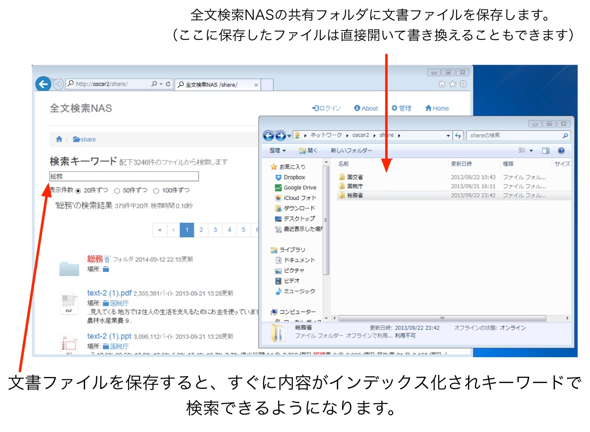

アクセス制限機能
一般的なNASと同様、各共有フォルダごとにユーザー名とパスワードによるアクセス制限をかけることができます。また、グループを定義してグループ単位でのアクセス許可設定を行うことも可能です※。
※試用モードではユーザーやグループを設定することはできますが実際にはアクセス制限が適用されません
最新の検索技術が、あなたのビジネスに効率をもたらします
全文検索NASは、キーワードを与えるだけで数百万件の文書ファイルから瞬時に目的のファイルを探し出すことの出来る全文検索エンジンを搭載したネットワーク接続型の記憶装置(NAS)です。
専用お問い合わせ番号 050-3159-5792(朝8時〜夜10時,年中無休) メール: info@jp.walbrix.com
専用OSをインストールすれば、使わなくなったパソコンを全文検索NASとして再利用できます。個人利用なら試用期限無期限で実質無料。
インストールや機能に関するお問い合わせは 050-3159-5792 まで(朝8時〜夜10時,年中無休)
文書ファイルの全文検索を実現し、ファイル管理の手間を大幅に削減します
ありとあらゆるビジネスの場面でパソコンが使用されるようになってから十数年が経つ今、蓄積した膨大な文書ファイルの整理は頭の痛い問題です。「5年前の記録が今になって必要になってしまったのだけど、担当者が異動になってしまっていて所在がわからない…」などということはよくあります。でもファイルを全文検索NASに保存しておけば大丈夫。フォルダをひたすらダブルクリックして探し回らなくても、キーワードで瞬時にインデックス検索して目的の文書ファイルを見つけ出すことができるのです。キーワードで検索できるとなればフォルダ分けによる分類整理も今までのように細かくする必要はなくなり、ざっくりで済んでしまううえに、異動に伴う業務の引き継ぎコストも削減できます。

NAS (Network Attached Storage)とは、ネットワーク接続型のハードディスク（ストレージ）です。
NASは社内の全てのPCから利用出来る「共有フォルダ」として機能するシステムです。NASがあれば、ファイルをUSBメモリで受け渡したり、隣の席の人にメールで送ったりしなくて良くなります。
ファイル名やフォルダ名を思い出せなくても構いません
全文検索NASはワード、エクセル、パワーポイントといったオフィス文書やPDFファイルの中身までを高速に検索できる全文検索エンジンを搭載。ファイル名がわからなくてもインターネットで情報を検索するときのように思いついたキーワード（固有名詞や出来事など）をいくつか与えるだけで全てのフォルダから目的の文書ファイルを探し出せるのです。


廃棄予定のXPパソコン、捨てる前に再利用してみませんか
マイクロソフト社が Windows XPに更新プログラムを提供するのを終了し、多くの企業で Windows XP搭載パソコンは随時廃棄されてゆく運命にあります。また、ご家庭にも使わなくなった XPパソコンがあるのではないでしょうか。全文検索NASは、専用の無料オペレーティングシステム Walbrix(ワルブリックス)で動作するソフトウェア製品ですので、使われなくなったパソコンにインストール(※)することで費用をほとんどかけずに試用することができます。
専用OSの画面から簡単に全文検索NASをインストール
※全文検索NASを試用いただくには、インテル Core2Duo以降など64bit対応のプロセッサとと1GB(OSに512MB、全文検索NASに最低512MBが必要です)以上のメモリを搭載したパソコンをご用意ください。なお Walbrixをインストールすることにより元の OS(Windows)は消去されます。
専用OSをインストールすれば、使わなくなったパソコンを全文検索NASとして再利用できます。個人利用なら試用期限無期限で実質無料。
インストールや機能に関するお問い合わせは 050-3159-5792 まで(朝8時〜夜10時,年中無休)
| 他社製全文検索ソリューション | 全文検索NAS | |
| 動作に必要なオペレーティングシステム | サーバー版Windows(実売最低8万円程度) | 専用OS(無料) |
| ユーザー数に応じた追加ライセンス料金 | CALを購入する必要あり | 無料 |

クラウドは使用禁止ですか？でも大丈夫
「検索が便利なのはわかるけど、規則上社外に文書ファイルを保存すことはできない」「インターネット回線が速くないので外にファイルを置くと遅くて不便」…心配ご無用、全文検索NASはインターネット上のクラウドサービスではありません。本製品はお客様の事業所内に設置するオンプレミス※なシステムです。
※オンプレミス＝社内設置。クラウドの対義語。
したがって文書の外部送信に関する規定の設けられた場所でも問題なく運用できますし、インターネット接続の速度が通常100Mbpsなのに対し一般的な社内LANは 1G(1000M)bpsと10倍ですから、速度の差は圧倒的です。
全文検索NASは無料でインストールして「試用」することができます。試用期限はありませんので、十分にその有効性をご確認になってからライセンスをご購入いただくことができます。試用版には広告が入るほか一部機能制限がありますが、個人利用で広告の表示や機能制限が問題にならない方は試用モードのままずっとお使い頂いても問題ありません。
ライセンスキーを購入すると広告が表示されなくなり、機能制限がなくなります。

一般的なNASと同様、各共有フォルダごとにユーザー名とパスワードによるアクセス制限をかけることができます。また、グループを定義してグループ単位でのアクセス許可設定を行うことも可能です※。
※試用モードではユーザーやグループを設定することはできますが実際にはアクセス制限が適用されません
保守サービスを別途ご契約頂くと、お客様オフィス内に設置された全文検索NASと当社の間で、強固に暗号化された通信経路を作成し、自動バックアップの設定等を行いお客様のデータがしっかりバックアップされているか定期的に遠隔チェックいたします。
また、機器の設定変更やデータ消失時のバックアップからの復元についても遠隔から対応いたします。
既にNASを導入済みで全文検索NASへの即時移行が難しい場合は、全文検索NASの自動同期機能をお使いください。毎週、指定の曜日時刻に他のNASの共有フォルダを自動的に複製します。この機能により、全文検索NASを社内検索サーバーとしてもお使いになれます。
NASに保存されたファイルに外出先からもアクセスしたい場合でも大丈夫。当社が提供するWBPORT.comサービスをご検討ください。
全文検索NASを使ってみるには、使っていない適当なパソコンに専用オペレーティングシステム Walbrix(ワルブリックス)をインストールします。
専用OSをインストールすれば、使わなくなったパソコンを全文検索NASとして再利用できます。個人利用なら試用期限無期限で実質無料。
インストールや機能に関するお問い合わせは 050-3159-5792 まで(朝8時〜夜10時,年中無休)
全文検索NASに興味があるけど、始め方がよくわからないという方はこちらへ:
全文検索NAS専用お問い合わせ番号 050-3159-5792(朝8時〜夜10時,年中無休)
メール: info@jp.walbrix.com
ワルブリックス株式会社 (システムを実際に開発している者が電話に出ます)

全文検索NASプリインストールのオーダーメイドサーバーならマックスサーブの Finderixをどうぞ
興味はあるけど、今は時間がない・・・
大丈夫です。「お気に入り」を使わなくても「全文検索NAS」でインターネットを検索すればまたいつでもこのページへ来ることができます。
「全文検索NAS」 （ぜんぶんけんさくなす）いつか時間がある時にこの言葉だけを思い出してください！
2014年8月 嶋田 大貴 (ワルブリックス株式会社[1])
IT市場のトレンドはクラウドとソーシャルで占められているが、組織のレギュレーションによる制約、保存容量の巨大さといった理由から依然としてプライベートネットワーク内のストレージシステムに文書を保管する需要が一部に存在する。クラウドサービスにデータを保存するのが当たり前であるかのような風潮がはびこるにもかかわらず、未だ NAS (Network Attached Storage) アプライアンスと呼ばれる製品群が個人向けのみならず企業向けにも販売され続けていることはその証左である。
市販のNASアプライアンスには豊富な機能が搭載されているものの、大量の文書ファイルを保存する用途においてある重要な機能が欠けている。 それは保存されている文書ファイルを全文検索する機能である。全文検索とは、文書ファイルのファイル名だけでなく内容までもを対象に 検索を実行することにより、ユーザーが求める文書を（まるでGoogleでインターネット上の情報を検索するように）即時に探し出せる機能をいう [2]。個人ブログなどではこの機能を「インデックス検索」と呼んでいる例も 見受けられる（全文検索に限らずコンピュータで行われる検索処理では多くの場合何らかの索引すなわちインデックスが使用されるため、 厳密にはインデックス検索という用語が特に全文検索を指すわけではない）。
一部の製品には機能として全文検索が(カタログスペック上)存在する場合もあるが、多くの場合は実用性に難があり、そのためかメーカーも あまりその機能を宣伝することはない。そのため多くのユーザーは、低速な NAS上のフォルダに対してクライアントPCから 探三郎のような フリーソフトウェアを用いて全文検索インデックスを個別に作成し利用するなどといった妥協を強いられている。 NAS製品に全文検索機能が搭載されない又は搭載されてもそれが宣伝に値する実用性を有しないことには下記のような事情があると推察される。
多くのNASアプライアンス製品はコストや消費電力を下げるため安価で非力なプロセッサと少ないメモリで構成されている。通常のファイル共有サービスを提供するだけならば高速なプロセッサや大容量のメモリは必要無いためこれは理に適っているが、全文検索機能を提供するとなれば状況は一変する。プロセッサの貧弱さは現実的な時間内に検索インデックス[3]を作り出すことを難しくし、またメモリの少なさは効率的に検索を実行するため十分な大きさのインデックスをメモリ上に展開することを妨げる。
全文検索のためのインデックスを作成するためには、文書ファイルからテキスト部分を抽出する処理が必要である。しかしながら、ひとくちに文書ファイルと言ってもその形式は様々で、具体的には Microsoft Officeの各形式、PDF等がある。全文検索機能を提供するにはこれらのファイル形式それぞれについてテキスト部を抽出するプログラムが必要なばかりか、外見上同じファイル形式であってもバージョンの違いなどにより内部形式に差異があったりするためテキスト抽出プログラムをそれらに逐一対応させるという困難が存在するのに対し、ユーザーは可能な限り保有している全ての文書ファイルを検索できることを望むうえ、NASアプライアンスは原則として売り切りのハードウェアであるという製品の性質上ソフトウエアの更新による対応は難しい[4]。
全文検索機能が有用であるにも関わらず欠落していることは認識されているため、既に製品化されているソリューションが存在する。ここでは NASを全文検索するアプローチとして外付け型と統合型を比較する。
前述のような理由によってNASに欠落している全文検索機能を、外付け型のアプローチで補完する全文検索専用のソフトウェアないしアプライアンス製品が存在している。これらの製品はプロセッサパワー・メモリ搭載量ともに豊富な IAサーバー[5]などで構築され、NASとは別に設置される。対象となる NASの内容を定期的にクロールすることで全文検索用のインデックスを作成し、ユーザーに全文検索機能を提供するこの方式のメリットは、いかなる種類のNAS（だけでなくしばしばWebサーバも）にも全文検索機能を付加できることである。他方デメリットはNASと別個に物理的な設置場所を要するであろうことと、NAS上のファイルが追加・更新されても検索エンジンによる次回のクロール処理が行われるまでそれが検索結果に反映されないことである。
外付け型検索エンジンとは異なり、それ自体に実用的な全文検索機能を有するNASというよりシンプルなアプローチが考えられる。この方式では、先述した外付け型検索エンジンのメリットとデメリットがちょうど逆転することになる。
この方式を取る全文検索可能なNASを全文検索NASと定義し、本稿はそれの実装にまつわる技術的な道程及び課題の議論を主題とする。市販のNASアプライアンス製品と異なりプロセッサが強力でメモリ容量が大きくなおかつ入手の容易なPCやIAサーバのを前提として機能を構築することで、実用的な全文検索機能を持ったNASを構築するという目論見である。
Webブラウザを通じて文書ファイルをリポジトリに登録でき、それを全文検索できるソリューションが製品として存在する。その種のものは OSから直接利用出来る共有フォルダをサービスとして提供していない（ファイルをクライアントアプリケーションが直接開いて利用できない）ため、文書共有サービスではあっても NASというカテゴリには入らない。
全文検索NASには以下の要素が必要である。
a. オペレーティングシステム
b. ファイル共有サービス
c. 全文検索エンジン
d. 検索インデックス作成サービス
d-1. テキスト抽出サービス
e. ユーザーインターフェイス
ネットワーク及びファイルシステムを司る基本サービスを提供するオペレーティングシステムとしては多くの市販NASと同様に Linuxを用いる。システムそのものをワンストップでネットワーク配布可能にするため、GNU/Linuxを含むソフトウェア全体を Xen[6]の準仮想マシン[7]として構成したのち tarアーカイバでパッケージした準仮想マシンイメージを作成する。Xenの準仮想マシンイメージは、市販PCやIAサーバなどのx86-64アーキテクチャを持つコンピュータ上で動作する Walbrixオペレーティングシステム[8]でダウンロードし実行できる。また、このイメージは Docker[9] へ移植することも容易であると思われる。
イメージを作成するための基本となる Linuxディストリビューションとしては Gentoo Linux[10]を用いる。但し、配布容量を削減するため Gentoo Linuxとしての機能は削除しシステムの動作に最低限必要な要素のみ残す[11]。
Windows Server[12]を用いる製品と異なり、オペレーティングシステム自体ないし利用ユーザー数に対してかかるライセンス費用は全く発生しない。
ファイル共有サービスとしては、市販のNASと同様 SMBプロトコル[13]サーバ(CIFS)のオープンソース実装である Samba[14]を用いる。SMBはもともと Windows用のファイル共有サービスであるが、Mac OS Xなどからも利用できる。
膨大なテキストを高速に検索するには全文検索エンジンが必要である。本全文検索NASの実装には全文検索エンジンとして Groonga[15]を使用する。世界的に有名な全文検索エンジンとして別に Lucene[16]が存在するが、Groongaは国産であり日本語テキストの全文検索において前身の Senna[17]から続く長い経験が反映されている。
Groongaは全文検索エンジンでありながらデータベースとしての機能を併せ持っているため、テキストの検索用途だけでなくNAS上の全てのファイルに関する一般情報を保存するためにも用いる。
高速な検索処理を行うには、あらかじめ興味の対象となる内容を検索用に適した構造に組み直したデータ、すなわちインデックスを作成する必要がある。データをGroongaが要求する形式に整形して投入することでGroongaによりインデックスが作成される。このGroongaにデータを投入するまでの処理をする部分を検索インデックス作成サービスと呼ぶことにする。
この処理は Python[18]言語を用いて実装する。Groogaを Pythonのメモリ空間内で効率的に利用するため、GObject introspection 機構と pygobjectモジュール、そして groonga-gobjectを用いて Groongaの機能にアクセスする[19]。
他の選択肢として有力なプログラミング言語に Go[20] がある。Pythonと異なりプラットフォームにとってネイティブな実行ファイルを生成するため高速で省メモリな動作が期待出来るほか、C言語で記述されたライブラリの関数を直接コールできるため Groongaを利用する際のオーバーヘッドが減ることも考えられる。にも関わらず依然として Pythonが選択されたのは実装者が十分 Goに習熟していないという理由による。Goによる実装は今後の課題として認識されている。
dを行うにあたっては、NAS上に保存された文書ファイルからテキスト部分を抽出する処理が必要となる。この処理をする部分をテキスト抽出サービスと呼ぶことにする。
ユーザーが全文検索機能を利用するにあたっては、ユーザーから検索キーワードの入力を受け付け、全文検索を実行した上でその結果を表示し、対象のファイルへのアクセスを提供する画面が必要となる。また、NASとしての機能を管理するためにもやはり何らかの管理画面が必要である。
この画面は Webブラウザから利用出来る所謂「Webアプリケーション」として実装する。よって全文検索NASは Sambaサーバであり Webサーバでもあるということになる。モダンな Webアプリケーションの作法に則り、サーバーサイドとクライアントサイドの組み合わせで動作する形態を取る。
サーバーサイドの実装には Python言語と Flask[21]フレームワークを使用する。また、Groongaへのアクセスについては d. と同様 groonga-gobjectを用いる。Webサーバ(Webブラウザとの通信を直接担当しアプリケーションとの仲介をする)には Apacheを用いるが、WSGI[22]に対応している Webサーバであればこれに限る必要はない。
クライアントサイドのプログラムはWebブラウザによって解釈され実行される。一般的に JavaScript言語で実装されるためそれに倣い、フレームワークとして AngularJS[23]を使用する。
全文検索NASを実装するにあたっての技術的な胆といえる部分はこれになる。設計のポイントは、
といった要件を満たすことを目標として絞り込まれる。
先述したようにGroongaは検索エンジンでありながらデータベースでもあるため、一般的なデータベースと同様にスキーマ定義を行う必要がある。
ファイルを検索するという機能を提供するのであるから、当然データベースには対象となる全てのファイルについての必要な情報を無駄なく保存できなければならない。
この要件によりデータベース・スキーマは、Sambaにより共有フォルダとして公開されているディレクトリ以下に存在する全てのファイルやディレクトリについてのメタ情報（ファイルシステム上の位置を特定する情報、ファイル名、サイズ、最終更新日）を保持し、なかでも文書ファイルについてはそのテキスト部分を保持できる[24]よう設計された。
文書ファイルについてはファイル全体のハッシュ値をキーとしてそ内容となるのテキストをファイル情報とリンクした別のテーブルに保存することで、同じ内容のファイルを何度も全文検索のためのテキスト抽出処理に通さなくても良いようになっている[25]。
POSIX的なファイルシステム上で特定のファイルやディレクトリを特定する唯一無二の方法は、そのパス名を用いて探索することである。ファイルシステム上のファイルを全文検索するオープンソースソフトウェアの多くは、何らかの形でパス名をキーにしたデータベースを内部で用いている。
全文検索NASの実装をするにあたって、当初はそれに倣いパス名のハッシュ値をファイル情報の主キーとし、実際のパス名とあわせてデータベースにに格納することでファイルシステム上の位置を特定する手段としていたが、この方式には大きな問題があった。問題とは、端的に言えばリネームや移動に対応できないことである。
リネーム・移動元のレコードを削除して新しいパス名のレコードを新たに挿入すれば良いと考えるかもしれない。単一のファイルをリネーム・移動する場合ならそれで良いが、100万件のファイルを配下に持つディレクトリをリネームした場合はどうか。配下100万件のレコードについても延々と同様の処理をしなければならないのである。最悪、たかがディレクトリをリネームしただけなのにデータベースを破棄して作成しなおすのと変わらない分量の処理が発生しシステムの負荷を急上昇させることになる。そしてその時、ディレクトリのリネームが検索インデックスに反映されない（システムとしては反映させようとしているが時間がかかっている）ことに気付いたユーザーがリネームを何度も再試行することにより事態が悪化することは想像に難くない。
データベース設計を行ったことのある者ならすぐに気付くと思うが、問題は容易に変更されうる「名称」という要素を使って物事への参照を保持することにある。しかしながら、先述したようにファイルシステム上の存在を特定する唯一無二の方法は名称を用いて探索することであり、間の何かが足りていないことになる。
名称以外の変化しにくい固有値として iノード番号をキーに用いる方法も考案されたが、ファイルの削除などで使われなくなったiノード番号が十分に長い周期で再利用されることは誰も保証できないであろうし、なにより検索対象の共有フォルダを tarでバックアップしてリストアしただけでデータベースとの参照関係が全滅してしまうようでは運用面で困るため、それとは別のとある要素を用いることとした。「とある要素」についてはここであえて示さずとも様々なものが考えられるだろう。
日本語テキストの検索に固有の問題であるが、全文検索インデックスの構築をするにあたっては分かち書きとN-GRAM[26]のいずれの方式を使用するかという選択をしなければならない[27]。
分かち書きは文章を形態素解析[28]により単語単位に分割してインデックスする方式であるのに対し、N-GRAMでは（正確さを差し置き極めて簡単に説明すると）文字単位でのインデックス作成が行われる。例えばユーザーがふと京都への旅行を思い立ち、「京都」をキーワードとして検索した時に「東京都」を含む文書まで検索にマッチしてしまうのは明らかに意図するところではないが、分かち書き方式であれば「東京都」は「東京」＋「都」として認識されるため「京都」とマッチすることを避けられるのに対し、N-GRAMは文字の並びが一致していればマッチしてしまうため、京都について検索すると東京都も検索結果に並んでしまうことになる。もしN-GRAMを用いた検索で京都についてだけ知りたければ「京都 -東京都」のようにユーザーが除外条件を検索式に追加しなければならない。
しかしながら、欧文と異なり和文は単語が空白で区切られていないため文章から単語を抽出することは容易ではない。「東京」＋「都」の例は形態素解析の結果が人間の期待通りであった一例に過ぎず、文章を解釈するのがコンピュータである以上、区切りの与え方が常に人間の期待通りになるわけではない。（人間ですら区切りを読み間違えて文章を誤読することはある）
また日本語テキストの形態素解析を正確に行うには膨大ば品詞データベース(辞書)が必要であるが、言葉は新しくなってゆくものであるから、いくらデータベースを拡充したところで時間の経過と共に陳腐化することは免れない。それもさることながら、辞書で固有名詞を十分にカバーすることはそもそも困難であるため企業の内部文書をインデックス化するのには向かないと考えられる。これにより全文検索NASの実装にあたっては N-GRAMをインデックス方式として選択した。
NASと全文検索エンジンを密に統合しなければ実現できないことのひとつがこのリアルタイムでのインデックス更新である。これが出来れば、ファイルを共有フォルダに新しく保存したり、または上書きした次の瞬間には検索エンジンにもその内容が反映されることになる。全文検索を必要とするようなNASの利用現場では典型的にファイルの生息期間が非常に長く常に最新の情報を検索しなければならない場面が多いとは考えにくいが、デモンストレーションでのインパクトが強いであろうという主に商業的な理由[29]もありこれを重要視している。
ファイルに変更があったことをリアルタイムに検知するためには下記の方法がある。
前者については情報がほとんど無いが後者は広く利用されており Python用のモジュールである pyinotify[31] も存在するため後者を採用した。
inotifyは特定のディレクトリに関するイベントを通知する Linuxカーネル独自の機構である。inotifyはサブディレクトリで発生したイベントを通知しないため、特定のディレクトリ以下を再帰的に監視したい場合は配下全てのディレクトリを監視対象として指定する必要があるが、pyinotifyはオプションによりそれも行ってくれるようになっている[32]。（監視中に起こったディレクトリの作成や削除もフォローする）
inotifyにより発せられるイベントに従ってファイルの最新情報を逐次データベースに記録するデーモンを Pythonで開発し、これを watch と名付けた。
イベントを処理するにあたって注意しなければならないことは、ひとつひとつのイベントを処理するのに長々と時間をかけるべきではないということである。さもなければ、大量のファイルが一括で共有フォルダに投入された時などにイベントキューが溢れてしまいイベントの取りこぼしを起こす結果となる。そのためイベントハンドラ内では極力単純な更新処理のみを行い（対象となるファイルに対応するデータベース・レコードに dirtyフラグを付ける等）、本格的な処理は後述する updateプロセスに委ねている。
それでもイベントの取りこぼしを起こりにくくするため、sysctlパラメータ fs.inotify.max_queued_eventsを調整することが望ましい。
以下のような時には、updateプロセスが起動する。
updateプロセスはデータベースから dirtyフラグの付けられたレコードを検索し、対象となるファイルやディレクトリを検査して必要な更新処理を行う。dirtyフラグの付けられたファイルについては必要に応じてテキスト抽出処理にかけ、抽出した内容を Groongaに投入する。ファイルシステム上に対象が既に存在しなかったり別の物に置き換わったりしている場合はデータベースからレコードを自体を削除する。
テキスト抽出処理の呼び出しはプロセッサの数+1個のプロセスプールによって並列的に行う。これにより、対象となるファイル数が多い場合のスループットが向上する。
何らかの理由によりリアルタイムで拾いきれなかった更新分を救済するため、cron的な定期ジョブとして共有フォルダ全体の更新処理（walk）プロセスを起動する。この処理には時間がかかる（100万件のファイルを walkするのに数十分）ため、実行間隔や実行時間には配慮が必要である。
walkプロセスはファイルシステムを文字通り walkしてデータベースとの差異を発見し、更新される必要があるレコードに dirtyフラグを付けて回る。また、ファイルシステム上で発見されなかったファイルやディレクトリについての(つまり孤児化した)レコードをデータベースから削除する。walkの完了後、dirtyを回収するため updateプロセスの起動がトリガーされる。
各種文書ファイルから検索対象となるテキスト部分を抽出するには、それぞれ対応したオープンソースの変換プログラムをサブプロセスとして呼び出しその出力を拾い上げる。あくまでオープンソースである故、プロプライエタリなソフトウェアで作成されたファイルの100%のから問題なく抽出処理が出来るわけではないが、抽出できなかったファイルについてはやむを得ないものとする。
変換プログラムは入力ファイルの内容によって無限ループに陥ることが多いため、OSの timeコマンドを通して変換プログラムを走らせることで実行時間に制限を設けてこれに対処した。
抽出されたテキストの文字エンコーディングが UTF-8[33]でない可能性がある場合は、nkf[34]により変換元のエンコーディングを自動判別させた上で UTF-8に変換する。
様々な文書フォーマットを変換できる unoconv[35] というプログラムがあるが、これの実態は OpenOffice[36]又はLibreOffice[37]のフロントエンドである。（ダミーで良いとはいえ）X11[38]サーバを必要とし多大な実行時間とメモリを消費する割には抽出の成功率がそれほど高くないことと、システムの配布容量へのインパクトが大きすぎるためこれを使用することは諦め、各フォーマットに特化されたプログラムを呼び分けるようにした。
全文検索NASに必要なユーザーインターフェイスは大きく分けて下記の二種類である。
なお、共有フォルダへの直接アクセスについては Samba及びクライアントOSの範疇であるためここでは扱わない。
(未稿)
(未稿)
全文検索NASの準仮想マシンイメージは tar.xz[39]形式で 200MB程度であり、これは市販されているNASアプライアンスのファームウェアと比較しても低容量である。
テキスト抽出処理の改善
ActiveDirectory認証への対応
[1] http://www.walbrix.com/jp/
[2] http://ja.wikipedia.org/wiki/全文検索
[3] http://ja.wikipedia.org/wiki/索引
[4]「 ユーザーがどんなファイルを突っ込むかわかったもんじゃないのでサポートのコストが測れない」ともいう
[5] http://ja.wikipedia.org/wiki/PCサーバ
[6] http://ja.wikipedia.org/wiki/Xen_(仮想化ソフトウェア)
[7] http://ja.wikipedia.org/wiki/準仮想化
[8] http://www.walbrix.net
[9] http://ja.wikipedia.org/wiki/Docker
[10] http://ja.wikipedia.org/wiki/Gentoo_Linux
[11] CoreOS https://coreos.com と似たアプローチである
[12] http://ja.wikipedia.org/wiki/Windows_Server
[13] http://ja.wikipedia.org/wiki/Server_Message_Block
[14] http://ja.wikipedia.org/wiki/Samba
[15] http://groonga.org
[16] http://ja.wikipedia.org/wiki/Lucene
[18] http://ja.wikipedia.org/wiki/Python
[19] http://qiita.com/groonga/items/71b145b37d77bd160bf2
[20] http://ja.wikipedia.org/wiki/Go_(プログラミング言語)
[21] http://ja.wikipedia.org/wiki/Flask
[22] Python言語で書かれた Webアプリケーションを Webサーバと連携させるための標準的な方式
[23] http://ja.wikipedia.org/wiki/AngularJS
[24] Groongaでは、全文検索用のインデックスが有効になったデータベース・カラムにテキストを投入することで自動的にインデックスが更新される
[25] 往々にして、同じ内容で重複したファイルが企業のファイルサーバには大量に存在するものである
[26] http://ja.wikipedia.org/wiki/全文検索#N-Gram
[27] Groongaは双方に対応している
[28] 形態素解析エンジンとしては MeCab http://ja.wikipedia.org/wiki/MeCab が古くからよく利用されており、Groongaもこれを使用する
[29] 技術者の価値観で飯は食えない。
[30] http://en.wikipedia.org/wiki/Inotify
[31] https://github.com/seb-m/pyinotify
[32] もっとも、Pytnonの os.walk()が遅いため巨大なツリーの監視を開始するには長い時間を要する
[33] http://ja.wikipedia.org/wiki/UTF-8
[34] http://ja.wikipedia.org/wiki/Network_Kanji_Filter
[35] https://github.com/dagwieers/unoconv
[37] http://ja.wikipedia.org/wiki/LibreOffice
[38] http://ja.wikipedia.org/wiki/X_Window_System
[39] http://ja.wikipedia.org/wiki/Xz_(ファイルフォーマット)